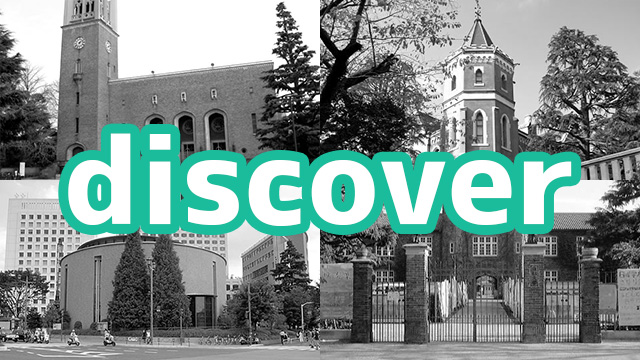

センター試験も終わり、大学入試はいよいよ私立の本試験が始まる今日この頃です。
例年であればこの時期はてんてこ舞いの私ですが、今年は高３を担当していないこともあり、10年ぶりくらいに比較的平穏な日々を過ごしています。ストレスという点ではだいぶマシなのですが、なんとなく物足りないところもあり、なんとも不思議な気分です。
振り返ってみると高3の受験期というのは、実際に受験をする生徒にとっても、指導する講師にとっても、本当に貴重なかけがえのない時間なのです。
中学入試は一言で言ってしまえば親の入試。子供にとっては嵐のように過ぎ去る時間。高校入試は中学入試よりは子供のプレゼンスが増えますが、まだまだ感情に振り回されています。しかし、大学入試になると生徒はほぼ大人。社会的な約束事や建前も理解し、論理的な思考も当然できるので、「理性」で物事にあたる割合は大きくなります。一方で、理性で割り切ることができない「感情」も依然渦巻いているのです。結果、生徒の心の中では「理性」と「感情」がぶつかり合い、だましあい、複雑な心理を形成していきます。
大学入試では、受験の結果が悪ければ、生徒は自分が「落ちる」ことを理性で把握します。センター試験の結果が志望大学の最低合格ラインにまったく届かない状況で「それでも受かる」と希望的憶測を心の底から抱いている生徒はまずいません。にもかかわらず、生徒と会話をしてみると希望的憶測がどんどん出てきます。「大逆転にかけてがんばる」「最後までやりきる」「高い目標を目指す」。これらの言葉は高校入試でも生徒がよく口にしますが、大学入試のそれとは内実が異なります。高校入試においては、生徒は感情の赴くまま、ある意味信じ込んでこれらの台詞を発しているのですが、大学入試では内心では無理と分かっていてあえてこういいます。ただし、これらの言葉は「大人に向けた建前」でもありません。「無理だろう」も本心、「大逆転にかけてがんばる」も本心であると思い込んでいるのです。
この心の二重構造はとてもやっかいです。「無理だろう」の心を「大逆転にかけてがんばる」が覆い隠している状況ですが、本人は「大逆転にかけてがんばる」が不可能であることをどこかしらで自覚しているにも関わらず、それを直視していません。なにも悪気があるわけではなく、どちらも本人からすれば本心なのです。
塾の講師として、この時期受験生と接する理由は、この二重構造を解体することにあります。学力向上の観点でみれば、この時期教えられることなどもうほとんどありません。過去問を解き、自分の弱点を見つけて黙々とつぶすしかないでしょう。
この時期の生徒との面談は、とても長いものになることがあります。生徒の言うことを鵜呑みにせず、客観的に心理状況を推測し、「もしかして、きみは今こう思っていないか？」「あえて見ないふりをしている本心はないか」と話を振りながら、ゆっくりと生徒に促していきます。そうして生徒の「大逆転にかけてがんばる」というポジティブ思考の「覆いを取り払う」と、そこに本当の「無理だろう」が姿を現します。
このように書くと、安全志向で志望校を下げさせるために説得しているように見えますが、意図はまったく別にあります。生徒の心の中で「いける」と「無理」が無自覚に共存している状況では、勉強にも試験にも集中することはできません。例えて言うならば、深夜に部屋の隅からかすかな物音がする感じ。音は非常に小さいので、眠りを妨げるものではありません。しかし、音がしていることを自覚してしまえばどうしても気になってしまうはず。すると我々は布団から出て音の原因を探します。そして原因が分かれば、それがどんなにいやなモノであれ（ゴキブリとか……）、とりあえず次の行動に迷いなく移ることができるでしょう。逆に、一度音に気づいてしまったのに、原因を解明せずに我慢して眠ろうとするのは相当な気力を要します。
受験直前期も状況は同じです。「無理だろう」と自分が考えていることを自覚することができたとき、初めて私立の本試験、国立の二次試験に没入するという「次の行動」が可能になります。そして、雑事を取り払い没入することによってしか「大逆転」を引き起こすことはできません。
大学受験生をお持ちの保護者の方、あるいは、自分がまっただ中の受験生の方。キーワードは「覆いを取り払う」です。最も見たくない心の奥底にある本心を自覚できればあとはしめたモノ。そこから大逆転を狙いましょう！